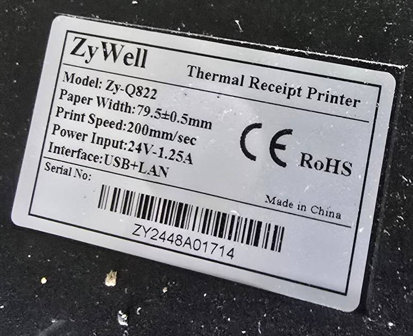

손님이 QR 메뉴판으로 보낸 주문을 주방 화면에서 받고, [인쇄] 버튼으로 주문서를 뽑는 방법입니다.
설치하는 분은 위에서부터 차례대로 하면서 칸에 표시해 주세요.
전체 흐름
손님 폰 QR 메뉴판에서 주문
→
인터넷
→
주방 태블릿/폰 주방 화면 + RawBT 앱
→
가게 와이파이 공유기 (인터넷 공유기)
→
ZyWell 프린터 랜선(LAN)으로 연결
이 가게 프린터 (사진으로 확인함)

프린터 바닥 라벨
제조사·모델
ZyWell ZY-Q822 (영수증 감열 프린터)
용지 폭
80mm
연결 방식
USB + LAN(랜선) 블루투스 없음
지금 상태
뒤쪽에 전원선과 랜선이 꽂혀 있음
중요: 이 프린터는 블루투스가 없습니다. 그래서 "랜선 → 와이파이 공유기 → 같은 와이파이에 붙은 안드로이드 기기" 방식으로 연결합니다. 휴대폰 블루투스 설정에서는 이 프린터가 보이지 않는 것이 정상입니다.
준비물
ZyWell 프린터(전원 켜짐, 80mm 감열 용지 들어 있음)
프린터 랜선이 가게 와이파이 공유기에 꽂혀 있음
주방에 둘 안드로이드 태블릿 또는 폰 1대 (아이폰·아이패드는 마지막 쪽 '다른 방법' 참고)
주방 화면 PIN 6자리 (QR 메뉴판 담당자에게 받음)
주방 화면 주소: https://qrmenuasia.com/kitchen/?shop=jinmi
1단계 · 프린터 주소(IP) 알아내기 — 약 3분
안드로이드 기기가 프린터를 찾으려면 프린터의 IP 주소(인터넷 안의 집 주소 같은 숫자, 예: 192.168.1.100)가 필요합니다. 프린터가 스스로 종이에 찍어 줍니다.
프린터 뒤쪽: 왼쪽 검은 선 = 전원, 가운데 회색 선 = 랜선
프린터 뒤쪽 회색 랜선의 다른 쪽 끝이 와이파이 공유기(인터넷 공유기)에 꽂혀 있는지 따라가 봅니다. 다른 계산기(POS)에 바로 꽂혀 있다면 설치 담당자에게 알려 주세요.
프린터 전원을 끕니다.
프린터 앞의 FEED(종이 올림) 버튼을 누른 채로 전원을 켭니다. 삐 소리가 나거나 종이가 나오기 시작하면 버튼에서 손을 뗍니다.
나온 종이(자가 진단표)에서 IP Address 줄을 찾아 아래에 적습니다.
프린터 IP: 포트(Port): 9100 (보통 이 숫자)
안드로이드 기기에서 설정 → 와이파이를 열고, 연결된 와이파이를 눌러 기기의 IP 주소를 봅니다.
기기 IP:
숫자 비교: 두 IP의 앞 세 덩어리가 같아야 합니다.
예) 프린터 192.168.1.100 / 기기 192.168.1.25 → 같음 → 2단계로 가세요.
예) 프린터 192.168.123.100 / 기기 192.168.1.25 → 다름 → 프린터 IP를 바꿔야 합니다. 설치 담당자(컴퓨터 작업 필요)에게 맡기세요.
주의: 이 프린터를 이미 다른 계산기(POS)가 쓰고 있다면 프린터 IP를 마음대로 바꾸지 마세요. 그 계산기 출력이 멈출 수 있습니다. IP를 바꾸지 않고 같이 쓰는 것은 괜찮습니다.
FEED 버튼 이름은 모델마다 'FEED' 또는 '↑' 표시입니다. 자가 진단표가 안 나오면 전원을 끄고 다시 한 번 해 보세요.
2단계 · 안드로이드 기기에 RawBT 앱 설정 — 약 5분
RawBT는 주방 화면이 만든 주문서를 프린터로 보내 주는 무료 앱입니다. (진미식당 점주님 폰에는 이미 설치되어 있음)
기기를 프린터와 같은 가게 와이파이에 연결합니다(1단계에서 숫자 비교 통과).
Play 스토어에서 RawBT를 찾아 설치합니다. (이미 있으면 건너뜀) — 유료 결제 화면이 나오면 누르지 말고 닫으세요. 무료로 충분합니다.
RawBT를 열고 설정(톱니바퀴)으로 갑니다.
연결 방법(Connection)을 네트워크 / LAN·Wi-Fi (TCP/IP)로 고릅니다. 블루투스가 아닙니다.
IP 주소 칸에 1단계에서 적은 프린터 IP, 포트에 9100을 넣습니다.
용지·프린터 폭 설정이 있으면 80mm로 맞춥니다.
RawBT 안의 테스트 인쇄(Test)를 눌러 종이가 나오는지 봅니다. → 나오면 2단계 끝.
여기까지 되면 프린터 연결은 끝났습니다. 남은 건 주방 화면에서 "RawBT로 보내기"를 고르는 것뿐입니다.
앱 버전에 따라 메뉴 이름이 조금 다를 수 있습니다(예: Connection method, Network, Printer IP). 같은 뜻의 칸을 찾으면 됩니다.
3단계 · 주방 화면 설정과 시험 인쇄 — 약 3분
주방 화면은 베트남어/한국어로 바꿀 수 있습니다. 괄호 안은 베트남어 화면의 버튼 이름입니다.
같은 안드로이드 기기의 크롬에서 qrmenuasia.com/kitchen/?shop=jinmi 를 엽니다. (크롬 메뉴 ⋮ → '홈 화면에 추가'를 해 두면 다음부터 아이콘으로 열림)
PIN 6자리를 넣고 들어가기(Vào). 한 번 들어가면 60일 동안 다시 묻지 않습니다.
▶ 시작(▶ Bắt đầu)을 누릅니다. 새 주문 알림 소리가 켜지고 화면이 꺼지지 않게 됩니다.
오른쪽 위 ⚙를 눌러 이 기기 설정(Cài đặt máy này)을 엽니다.
프린터(Máy in) → 블루투스 프린터 (RawBT 앱)(Máy in Bluetooth (app RawBT))를 고릅니다.
이름은 '블루투스'지만 실제로는 RawBT 앱으로 보낸다는 뜻입니다. RawBT가 2단계에서 정한 랜(LAN) 방식으로 프린터에 보내므로 이 프린터도 이것을 고르면 됩니다.
용지 폭(Khổ giấy) → 80mm.
기기 이름(Tên máy)에 '주방 1'처럼 적습니다(선택).
시험 인쇄(In thử)를 누릅니다. 처음 한 번은 "RawBT로 열까요?"라고 물을 수 있습니다 → 항상 허용. 프린터에서 '시험' 주문서가 나오면 성공입니다.
(선택) 새 주문 자동 인쇄(Tự in đơn mới)를 켭니다. 기기에 따라 자동으로 안 나올 수 있으니, 그때는 주문 카드의 인쇄를 누르면 됩니다.
닫기(Đóng).
설치 완료 확인: 손님 자리 QR로 실제 주문을 1건 보내 보고, 주방 화면에 뜬 주문을 인쇄해서 테이블 번호·메뉴·수량이 종이에 나오는지 봅니다.
매일 쓰는 법
영업 시작 때 프린터 전원을 켜고, 주방 기기에서 주방 화면을 열어 ▶ 시작.
손님이 주문하면 "띵" 소리와 함께 새 주문(Đơn mới) 칸에 카드가 뜹니다.
카드의 인쇄(In) → 주문서가 나옵니다.
요리를 시작하면 접수(Nhận đơn), 다 나가면 완료(Xong). 잘못 눌렀으면 되돌리기(Hoàn tác).
주방 기기는 충전기에 꽂아 두고, 와이파이를 끄지 마세요.
안 될 때 확인할 것
증상
확인할 것
아무것도 안 나옴
① 프린터 전원·용지 ② 프린터 랜선이 공유기에 꽂혀 있는지(공유기 쪽 불이 깜빡이는지) ③ 기기가 가게 와이파이에 붙어 있는지(모바일 데이터 아님) ④ RawBT 테스트 인쇄가 되는지
어제까지 됐는데 오늘 안 됨
공유기를 껐다 켜면 프린터 IP가 바뀔 수 있습니다. 1단계로 IP를 다시 찍어 RawBT의 IP를 고칩니다. (계속 바뀌면 설치 담당자가 IP를 고정)
글자가 너무 작거나 한쪽에 몰림
주방 화면 ⚙ 용지 폭이 80mm인지
하얀 종이만 나옴
감열 용지를 앞뒤 뒤집어 넣기(손톱으로 긁어 검게 되는 면이 인쇄 면)
주방 화면에 '연결 끊김'
기기 인터넷 확인. 저절로 다시 붙습니다.
주문이 안 들어옴
화면 위에 '온라인 주문이 꺼져 있어요'가 보이면 QR 메뉴판 담당자에게 켜 달라고 요청
다른 방법 · 아이패드/PC를 쓸 때
RawBT는 안드로이드 전용입니다. 아이패드·윈도우 PC는 주방 화면 ⚙ → 프린터 브라우저 인쇄(In qua trình duyệt)를 고르고, 보통 문서처럼 인쇄 창에서 프린터를 골라 찍습니다. 윈도우 PC는 ZyWell 프린터 드라이버 설치(USB 또는 LAN)가 먼저 필요해서 설치 담당자의 작업이 필요합니다. 안드로이드 방식을 권합니다.
설치 기록
설치 날짜: 설치한 사람:
프린터 IP: 주방 기기:
PIN 번호는 이 종이에 적지 마세요. · 문서: QR 메뉴판 · 진미식당 주방 프린터(ZyWell ZY-Q822) 설치 설명서